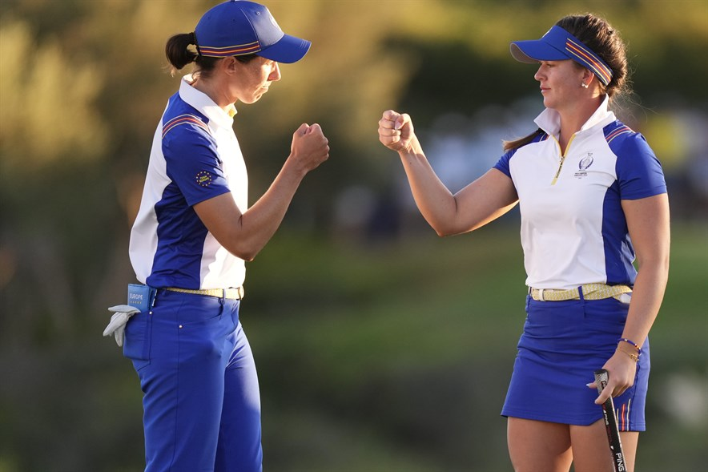
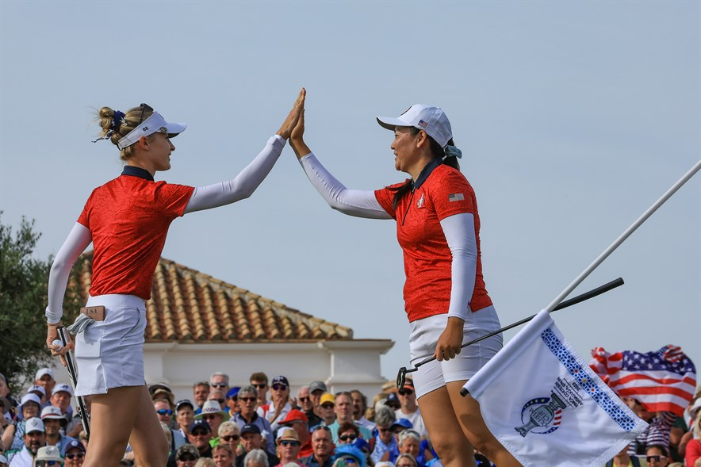

De langharige longhitter, Kyle Berkshire, heeft weer eens van zich laten horen. Dit keer met een nieuw wereldrecord, namelijk die voor balsnelheid: 241.6 mijl per uur.
Tik hier voor het hele artikel
⇓Zie hieronder voor het filmpje.⇓
🚨🚀💪 Kyle Berkshire set a new ball speed World Record — 241.6 MPH 🤯 💣
— NUCLR GOLF (@NUCLRGOLF) October 3, 2023
[🎥: @KyleBerkshire] @WorldLongDrive pic.twitter.com/81dw1nsTAY
Na twee dagen topgolf op Finca Cortesin houden Europa en Amerika elkaar in evenwicht. Dankzij geweldig spel in de fourballs trok Europa zaterdagmiddag de stand gelijk en gaan de singles op zondag de beslissing brengen.
Tik hier voor het hele artikel
De Solheim Cup is voor de Amerikanen beter begonnen dan voor Europa. Aan het einde van de eerste dag is de stand 5-3 in het voordeel van de Verenigde Staten. Emily Pedersen maakte in de middag de tweede hole-in-one in de geschiedenis van het evenement.
Tik hier voor het hele artikel
